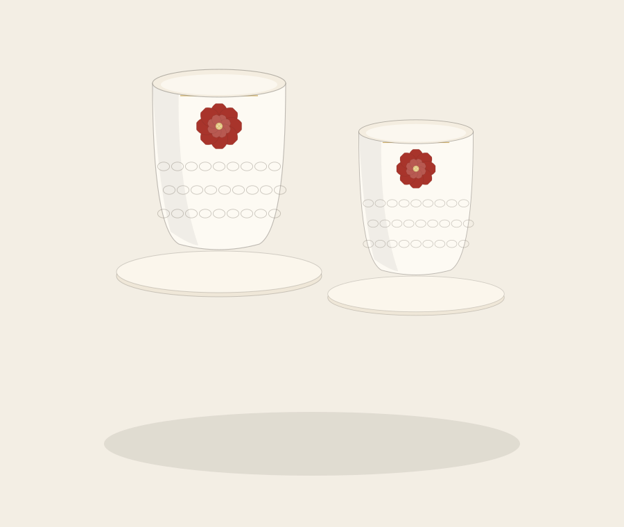

单品 04 · 器物
蚝壳月 · 骨瓷对杯
Bone China Cup Pair
杯身下半部是蚝壳厝的墙面——一片片海蛎壳以弧度咬合；上半部是一轮花冠暗纹。喝茶的时候，村子与花园同时在手心。
¥298
一对装 · 220ml × 2
| 容量 | 220 ml × 2 |
|---|---|
| 材质 | 德化骨瓷，透光温润 |
| 工艺 | 浮雕蚝壳肌理 + 釉下彩花冠纹 + 手工描金口沿 |
| 尺寸 | Φ 78 × H 92 mm（单杯） |
| 适用 | 可微波（金边款建议手洗） |
| 包装 | 双层绒布礼盒 + 说明卡 |
德化骨瓷
浮雕肌理
手工描金
对杯礼盒
下段蚝壳肌理以模具浮雕成型，壳体弧度彼此咬合，模拟蚝壳墙的砌法；上段花冠纹以釉下彩转印，烧成后与胎体融为一体，不易磨损。
口沿描金为手工操作，每只杯的金线宽度略有差异，这也是手工的痕迹。
可用于微波炉加热，但描金口沿款建议手洗，避免洗碗机长时间冲刷。
避免骤冷骤热（如刚出冰箱直接冲沸水），以防瓷体开裂。
对杯以双层绒布分隔，礼盒可直接作为商务赠礼。企业定制 50 套起，可在杯底加印 LOGO 或定制礼盒腰封。
器型 — 两段
Texture & Motif
一只手摸到墙，一只眼看到花
下段 · 蚝壳墙
浮雕模拟海蛎壳的咬合砌法。手感粗粝，是蟳埔村巷的触觉记忆。
上段 · 花冠纹
釉下彩一轮花冠，含蓄不抢。盛茶时，茶色会透过留白处显出来。
口沿 · 描金
一圈手工金线，收住上下两段的过渡，也是德化瓷器的传统做法。